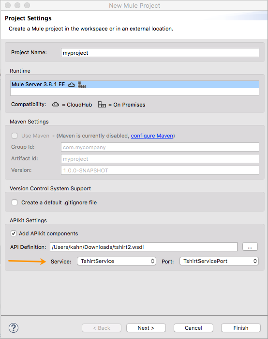
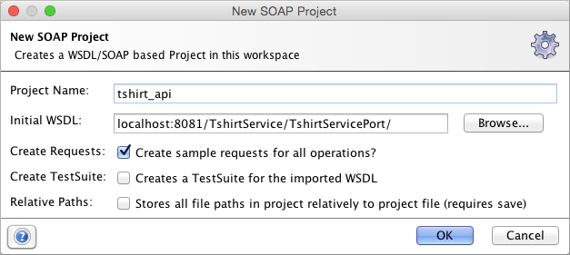
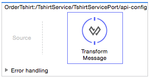
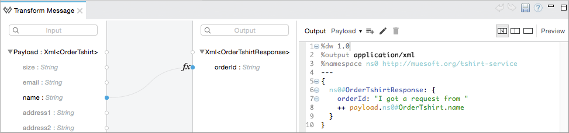
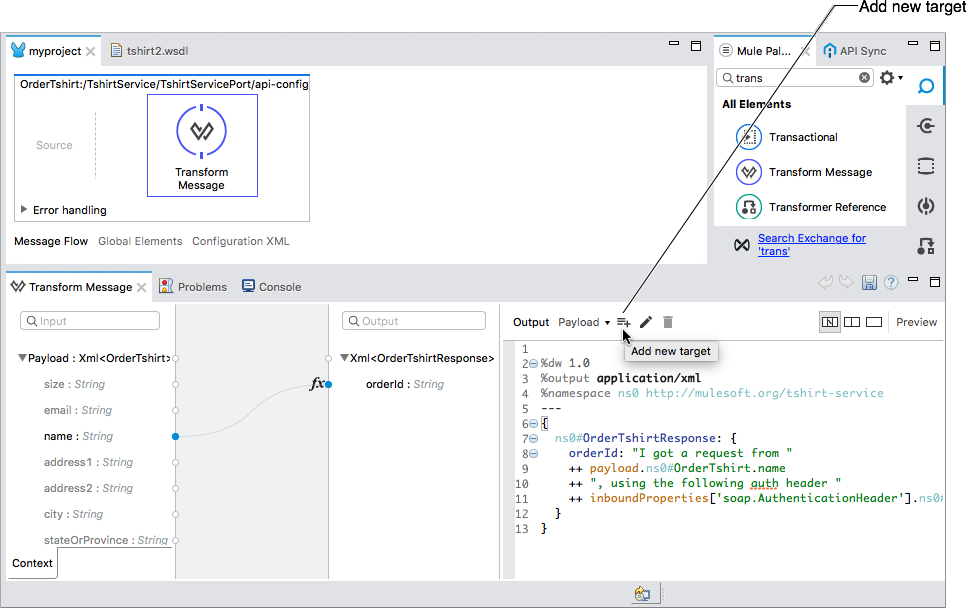
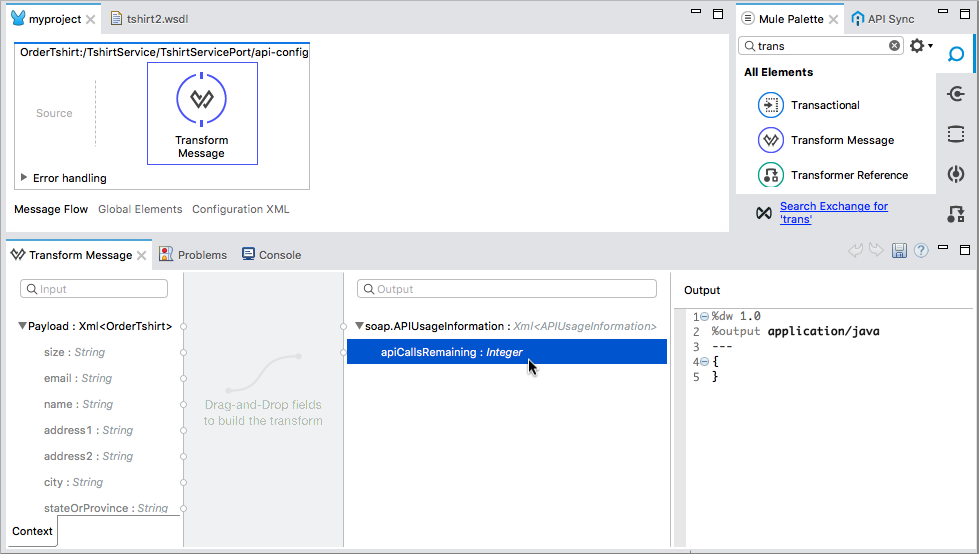
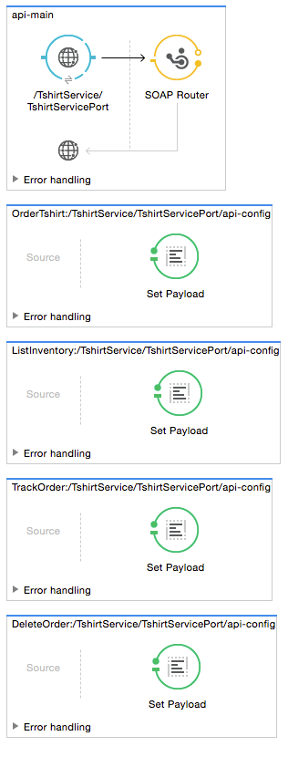

APIkit for SOAP Tutorial
APIkit for SOAP helps you implement a SOAP interface for accessing data resources and integrating the interface with backend processes to function as an API. Using APIkit for SOAP you can transition the implementation to REST.
In this tutorial, you create an API using Studio and APIkit for SOAP. You can download the XML code for the API or follow the steps in this document to create the flows and corresponding XML in Studio.
Prerequisites
-
Mule EE Runtime
-
The tshirt2.wsdl file
APIkit for SOAP supports consuming a remote WSDL. This tutorial, however, uses a local WSDL.
Create a New Project
You create a new project, specify the use of APIkit components, and refer to a WSDL file that you download.
To create an APIkit for SOAP project:
-
Check that you are using a version of Studio that includes the Anypoint APIkit SOAP Extension: Help > Installation Details. If not, install Studio 6.0 or later.
-
Download the example tshirt2.wsdl file to your local drive.
-
Under the File menu, select New > Mule Project.
The New Mule Project wizard appears.
-
In Project Name, enter a name for the project. Select or accept the default EE runtime, for example Mule Server 3.8.1 EE.
-
Check the Add APIkit components checkbox, and browse to the tshirt2.wsdl file you downloaded.
-
Select a service and port from the drop-down menus. For example, select TshirtService and TshirtServicePort.
 -
Click Finish.
The new project having a
src/main/wsdlfolder that contains the WSDL file appears. -
Right-click a blank area of the canvas and run the project.
-
Go to
http://localhost:8081/TshirtService/TshirtServicePort?wsdl.The contents of the TShirtService WSDL file appear.
Implementing an Operation
By default, each flow you generate in Studio has a payload that identifies the current operation that needs to be implemented by returning a SOAP fault.
In this part of the tutorial, you use the SoapUI tool to identify an operation that you need to implement by requesting the API that fails. Use the OrderTshirt operation to create a request in SOAP UI to place an order for a large t-shirt for John. The API cannot handle this operation and a SOAP fault occurs.
To resolve the fault, you modify the API. You add the Transform Message component to the flow and specify a message in DataWeave transformation language for responding to the request, effectively implementing the operation. In the DataWeave code, you use the proper namespace to avoid a soap:Server faultcode at the beginning of the response to the request.
The Transform Message component works on the process side after the endpoint defined in the WSDL has been hit, triggering the main flow of the Mule application to execute, which then calls the backend flow.
To generate a SOAP fault:
-
Create a SoapUI project using the
http://localhost:8081/TshirtService/TshirtServicePort?wsdlfor the initial WSDL: -
In the SoapUI client, request a large t-shirt for John by entering some values into the request envelope. For example:
-
Enter L between the
<size>tags. -
Enter John between the
<name>tags.
-
-
Submit the request.
The result is the SOAP fault.
<soap:Envelope xmlns:soap="http://schemas.xmlsoap.org/soap/envelope/"> <soap:Body> <soap:Fault xmlns:soap="http://www.w3.org/2003/05/soap-envelope"> <faultcode>soap:Server</faultcode> <faultstring>Operation [OrderTshirt:/TshirtService/TshirtServicePort/api-config] not implemented</faultstring> </soap:Fault> </soap:Body> </soap:Envelope>
To implement an operation to prevent the SOAP fault:
-
Remove the Set Payload element from the flow
OrderTshirt:api-config. -
Drag a Transform Message component from the Mule palette to replace Set Payload.
Leave the Source section of the APIkit backend flow empty.
 -
Select the Transform Message component.
The user interface displays the input and output for the current operation,
OrderTshirtas input, andOrderTshirtResponseas output. -
In the properties editor, specify the payload as follows:
%dw 1.0 %output application/xml %namespace ns0 http://mulesoft.org/tshirt-service --- { ns0#OrderTshirtResponse: { orderId: "I got a request from " ++ payload.ns0#OrderTshirt.name } } -
Save and rerun the project.
-
In the SoapUI client, repeat the request.
The output changes to a valid response:
<soap:Envelope xmlns:soap="http://schemas.xmlsoap.org/soap/envelope/">
<soap:Body>
<ns0:OrderTshirtResponse xmlns:ns0="http://mulesoft.org/tshirt-service">
<orderId>I got a request from John</orderId>
</ns0:OrderTshirtResponse>
</soap:Body>
</soap:Envelope>Working with Headers
In the SoapUI, the request window shows the soap Envelope header.
In this part of the tutorial, you modify the API to get header information from the request and add header information to the outbound response. Additional header information that complies with the WSDL document is called APIUsageInformation.
-
In the SoapUI, modify the OrderTshirt request by entering a value for the API key. For example, enter
987654321between the<apiKey>tags. -
In Studio, edit the DataWeave code to get the API key, which is an inbound property, from the header:
%dw 1.0 %output application/xml %namespace ns0 http://mulesoft.org/tshirt-service --- { ns0#OrderTshirtResponse: { orderId: "I got a request from " ++ payload.ns0#OrderTshirt.name ++ ", using the following auth header " ++ inboundProperties['soap.AuthenticationHeader'].ns0#AuthenticationHeader.apiKey } } -
Save and rerun the project.
-
In SoapUI, send a request, and check that the response changes to the following:
<soap:Envelope xmlns:soap="http://schemas.xmlsoap.org/soap/envelope/"> <soap:Body> <ns0:OrderTshirtResponse xmlns:ns0="http://mulesoft.org/tshirt-service"> <orderId>I got a request from John, using the following auth header 987654321</orderId> </ns0:OrderTshirtResponse> </soap:Body> </soap:Envelope>
To add a header to the outgoing message that complies with the WSDL document:
-
In Studio, open the tshirt2.wsdl in
src/main/wsdland scroll to APIUsageInformation element, which is the element expected by the contract. Copy the name of the element to the clipboard. -
On the canvas, select Transform message in the
OrderTshirt:/TshirtService/TshirtServicePort/api-configflow, and in the properties editor, click Add new target:The Selection dialog for selecting a target appears.
-
Select Property instead of Variable from the drop-down.
-
In Variable name, paste the contents of the clipboard, and add
soap.as a prefix. or typesoap.APIUsageInformation.The complete variable name looks like this:
soap.APIUsageInformation -
Click OK.
-
Double-click the
apiCallsRemaining: Integer.Double-clicking apiCallsRemaining: Integer adds
APIUsageInformation: { apiCallsRemaining: null }to the DataWeave code for the outbound property:%dw 1.0 %output application/xml %namespace ns0 http://mulesoft.org/tshirt-service --- { ns0#APIUsageInformation: { apiCallsRemaining: null } } -
Change
nullto10. -
Save and rerun the project.
-
In the SoapUI, execute the OrderTshirt request again. The response envelope from APIkit for SOAP is:
<soap:Envelope xmlns:soap="http://schemas.xmlsoap.org/soap/envelope/"> <soap:Header> <ns0:APIUsageInformation xmlns:ns0="http://mulesoft.org/tshirt-service"> <apiCallsRemaining>10</apiCallsRemaining> </ns0:APIUsageInformation> </soap:Header> <soap:Body> <ns0:OrderTshirtResponse xmlns:ns0="http://mulesoft.org/tshirt-service"> <orderId>I got a request from John, using the following auth header 987654321</orderId> </ns0:OrderTshirtResponse> </soap:Body> </soap:Envelope>
Using Typed Faults
APIkit for SOAP supports typed SOAP Faults. The SOAP Fault processor has generic faults and the following types:
-
Soap Fault 1.1
-
Soap Fault 1.2
You can select either type using any WSDL file, even for those files that do not contain typed faults.
For the tshirt2.wsdl file, there is just one typed fault named TshirtFault, which is mapped to every operation that the WSDL has: OrderTshirt, ListInventory, and TrackOrder.
To make the ListInventory operation display the typed fault:
-
In Studio, delete the Set Payload processor of the
ListInventory:api-configflow. -
Search for
faultin the palette, drag and drop SOAP Fault into theListInventory:api-configflow. -
In the properties editor, select
ListInventoryfrom the Operation drop-down. -
Select or accept the default
TshirtFaultfrom the Fault Type drop-down. -
Add a Transform Message component before the SOAP Fault component.
-
In the component properties, set up the following DataWeave code:
%dw 1.0 %output application/xml %namespace ns0 http://mulesoft.org/tshirt-service %namespace soap http://www.w3.org/2003/05/soap-envelope --- soap#Fault: { faultcode: "soap:Server", faultstring: "The error details", detail: { ns0#TshirtFault: { errorStuff: 500 } } } -
Save and rerun the project.
Using the SoapUI client, run the
ListInventoryoperation.The client returns the following envelope instead of the default fault:
<soap:Envelope xmlns:soap="http://schemas.xmlsoap.org/soap/envelope/"> <soap:Body> <soap:Fault xmlns:soap="http://www.w3.org/2003/05/soap-envelope"> <faultcode>soap:Server</faultcode> <faultstring>The error details</faultstring> <detail> <ns0:TshirtFault xmlns:ns0="http://mulesoft.org/tshirt-service"> <errorStuff>500</errorStuff> </ns0:TshirtFault> </detail> </soap:Fault> </soap:Body> </soap:Envelope>
Updating a WSDL File
After modifying a WSDL, such as adding an operation or editing a message, regenerate SOAP flows. Because modifying a WSDL is error-prone, before making a change, make a backup, change the attribute, and verify that the change worked.
To update a WSDL file:
-
Download tshirt-modified.wsdl, copy the entire contents of the downloaded file, and paste it in tshirt2.wsdl, replacing the tshirt2.wsdl content.
-
In Package Explorer, right-click the project and select Mule > Generate SOAP Flows.
A new flow named
DeleteOrder:api-configappears.